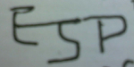
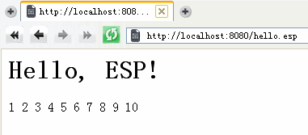

版本：1.0
作者：庄晓立（大连大有吴涛易语言软件开发有限公司）
来源：http://esp.eyuyan.com/docs/user_manual/
ESP (Easy Server Pages)，基于组件和模板的B/S网络应用快速开发平台。
ESP是类似却又明显区别于ASP,JSP,PHP的一项技术，是主要针对易语言提供的轻量级解决方案。
ESP将把易语言的应用领域，从桌面开发，进一步拓展到网络开发。
ESP为易语言开发提供特别便利支持，但不限于使用易语言开发。
ESP, the Easy Server Pages, a component & template based framework for B/S web application development.
关键字：ESP, WEB, B/S, 易语言, 网络, 瘦客户端(Thin Client), MVC(模型-视图-控制器)
暂无
请看以下ESP页面，hello.esp：
<html>
<body>
<h1>Hello, ESP!</h1>
<div esp="type=for from=1 to=10 index=x"> ${x} </div>
</body>
</html>
它的运行结果是：上面是标题“Hello, ESP!”，下面是文字“1 2 3 4 5 6 7 8 9 10”，见下图：
另请参考ESP模板系统。
本节主要介绍，如何配置主流WEB服务器，使ESP系统在其中正常运行。
把Apache的ESP模块文件 mod_esp.so 复制到Apache安装目录的 modules 子目录内。
修改Apache配置文件httpd.conf，增加一行：
LoadModule esp_module modules/mod_esp.so
修改Apache配置文件mime.types，增加一行：
application/x-esp esp
以上所有配置的作用是，通知Apache服务器加载ESP模块 mod_esp.so，并把针对ESP的请求交给该模块处理。
ESP 支持 Apache 2.2 及以上版本。
ESP库文件暂时固定存放于 C:\esplib (Windows) 或 /usr/local/esplib (Linux) 目录内。
把IIS的ESP扩展DLL文件 esp.dll 复制到任意目录内。
进入Internet信息服务管理器，在网站“属性-主目录”内，“配置”ISAPI应用程序映射，“添加”以下映射信息：可执行文件为esp.dll（含完整路径），扩展名为.esp，选择“全部动作”，选择“脚本引擎”，不要选择“检查文件是否存在”。
目前仅在Windows XP + IIS 5.1测试运行过，其他系统和其他IIS版本暂时没有测试。
ESP库文件暂时固定存放于 C:\esplib 目录内，全部需要静态编译。
计划中支持
计划中支持
ESP中有两类“对象”：页面和组件，其中页面可以被视为特殊的组件。通常提到对象时，均泛指页面对象或组件对象；通常提到组件时，往往也包含页面在内（具体视上下文而定）。
“页面”是ESP系统内部对应于.esp文件的抽象对象，“组件”是页面对象的子对象，是页面的重要组成单元。页面和组件都可定义有多个属性，都可用来渲染HTML和处理ESP事件。两者都只存在于服务器端。页面内可以有任意多个组件，组件内也可以有任意多个其它组件，它们之间形成树形层次关系。
对象（页面和组件）有属性和事件。对象由ESP系统负责创建、销毁和缓存，用户只能使用对象，读写其属性，接收其事件，渲染出HTML。
组件有参数，不同的参数会影响组件的功能和渲染结果。
模板，是具有特殊属性标记（esp:type="..."）的HTML文本文件，用于定义页面和组件的显示内容，及其子组件的定位。
ESP库，是导出一系列特定函数供ESP调用的动态链接库（DLL或SO），其中可以定义ESP页面和组件、接收和处理ESP事件、渲染生成HTML等。可由用户自行开发。
ESP是运行于WEB服务器后端的服务程序，其基本运行流程是：收到访问*.esp文件请求后，首先定位esp文件（即页面模板文件），创建页面对象，解析页面模板，创建模板中定义的组件对象，依次渲染，中间可能产生和处理事件，最终生成HTML文本，并通过WEB服务器发送给客户端浏览器。
ESP基本开发流程：编写ESP页面模板文件（界面部分），编写自定义ESP库（程序处理部分）。
ESP总体设计原则：人尽其责，物尽其用。即，选择适当的人员和适当的工具完成适当的任务。Apache/ISS/Nginx/Lighttpd在WEB服务器领域是很多站长的不二之选，HTML是网页界面设计的专用标准语言，我们不需要取代它们，只需要把易语言和这些优秀工具集成在一起，让易语言应用在它最擅长的编程领域。网站的管理人员，面对的还是他们最熟悉的WEB服务器；网页界面设计人员，面对的还是她们最熟悉的HTML/CSS/JavaScript和相关的编辑器；软件设计人员，面对的还是他们最熟悉的易语言、中文程序代码和常用的支持库；……所有的人员，和他们所用的工具，完美地匹配，将释放出最大的生产力。
ESP库，是导出一系列特定函数供ESP调用的动态链接库（DLL或SO），在其中可以定义ESP页面和组件、接收和处理ESP事件等。
ESP库通常使用易语言开发，内部调用ESP支持库(esp.fne)完成各项功能。也可以选择其他编程语言（如C/C++/Delphi）开发ESP库。
用户可以开发通用的可供第三方使用的ESP库，也可以开发特定于应用程序本身的非通用的ESP库，后者通常被认为是应用程序本身的一部分，是开发工作中的重点。
ESP库文件通常必须放置在特定的目录（esp_lib）或用户指定的其它目录，才能被ESP系统正常加载并使用。 当第一次需要创建某个页面或组件的对象时，ESP系统将从所有已识别的ESP库中自动定位到该页面或组件所在库，加载它，进而执行其中相应的函数；后续操作该对象时，也将调用相应的函数。
ESP库要求导出的函数，必须是stdcall调用约定，函数名称通常全部使用小写英文字母，词与词之间以下划线“_”分隔。 一般来说，与“库”相关的函数，函数名称通常以“esp_”开头（如 esp_page_names()），与“页面或组件”相关的函数，以页面或组件的类型名称开头（如 for_before_render()）。
有些函数是静态函数，是全局性的，不与任何对象关联；有些函数是“对象的方法（method of object）”，是特定于某个对象的，这类函数的第一个参数必是对象自身，由调用者调用时传入。
ESP库中的所有函数都可以省略。用户开发ESP库时，只要提供实际所需的函数即可。
ESP库可能需要导出的部分函数说明如下：
| 函数名称 | 函数原型 | 说明 |
| esp_setup_library | 返回逻辑型，无参数 | 在库被加载后调用，可以在其中做一些初始化工作。返回真表示是否初始化成功。如果返回假，则该库会被立刻卸载（卸载前会调用esp_cleanup_library()，见下文）。 |
| esp_cleanup_library | 无返回值，无参数 | 在库被卸载前调用，可以在其中做一些清理工作。 |
| esp_notify_library | 返回文本型，有五个参数，分别是：通知类型（整数型），整数参数1，整数参数2，文本参数1，文本参数2。 | 在需要库处理某个通知时调用此函数。不同的通知类型会有不同参数约定和返回值约定。小于等于-16777216（0xFF000000，负数）的通知类型已被系统保留；程序内应优先使用0到65535之内的通知类型；其它数值留作后续扩展使用。 |
| esp_page_names | 返回文本型，无参数 | 返回本库中定义的所有页面名称列表，页面名称之间以半角逗号分隔（逗号前后允许有空格）。 **注意：不在此列表内的页面名称将不能被系统识别。 |
| esp_component_names | 返回文本型，无参数 | 返回本库中定义的所有组件名称列表，组件名称之间以半角逗号分隔（逗号前后允许有空格）。 **注意：不在此列表内的组件名称将不能被系统识别。 |
其它函数将在下文相应章节逐一介绍。比较重要的函数有：组件渲染函数，事件处理函数，属性定义函数，等。
“页面”是ESP系统内部对应于.esp文件的抽象对象，“组件”是页面对象的子对象，是页面的重要组成单元。页面和组件都可定义有多个属性，都可用来渲染HTML和处理ESP事件。两者都只存在于服务器端。
一个页面内部，可以包含任意多个组件，组件也可以包含任意其它组件，最终形成树形层次结构，上层对象是下层对象的父对象，页面是最上层对象。 页面和组件的这种父子层次关系，是由页面和组件的模板定义的。这种父子层次关系，将影响组件的渲染过程和事件传递过程。
页面和组件都可定义多个属性，数量不限。属性是页面和组件对象记录自身状态的主要途径之一。
属性支持多种基本数据类型：逻辑型，整数型，小数型，双精度小数型，文本型，字节集型。如果未明确指定数据类型，默认为文本型。
“属性定义函数”用于定义组件属性或参数：
| 属性定义函数名称 | 函数原型 | 说明 |
| *_define_public_properties | 返回文本型，无参数 | 返回“属性定义文本”，具体格式见下文。如未明确指定，默认为公开(public)属性。 |
| *_define_private_properties | 同上 | 返回“属性定义文本”，具体格式见下文。如未明确指定，默认为私有(private)属性。 |
| *_define_properties | 同上 | 同上 |
定义属性时，可以选择使用这三个函数之一，也可以同时使用其中两个或三个函数分别定义不同的属性（注意定义的属性名称不能重复，否则后面的覆盖前面的，以上面表格中的顺序）。
上表中提到的“属性定义文本”，用 EBNF 描述如下：
属性定义文本 ::= 单个属性定义 [,|; 单个属性定义]* 单个属性定义 ::= 属性名称 [ ( 属性的属性 [,|; 属性的属性]* ) ] 属性的属性 ::= 属性类型 | 属性可见性 | 属性初始值 | 属性说明 属性类型 ::= [type(:|=)] bool|int|float|double|text|binary|string|bin 属性可见性 ::= [visibility(:|=)] public|private 属性初始值 ::= [initial|init(:|=)] '...'|... 属性说明 ::= [description|docs|help(:|=)] '...'|...
上面的“属性名称”，要求使用字母、数字、下划线(_)、汉字；“属性初始值”和“属性说明”均需提供英文单引号引住的文本形式，在没有空格和其它特殊字符的情况下可以省略两端的单引号；逻辑型属性的初始值可为：true, false, yes, no, 1, 0；字节集型的属性不允许有初始值。
在“属性定义文本”内“被单引号引住的”文本中，使用 ! 作为转义字符，它后面紧邻的特定字符将被转义：
| 转义前 | 转义后 | 说明 |
| !' | ' | 转义为单引号（不作为文本的边界符） |
| !` | " | 转义为双引号，字符 ` 所在按键通常位于键盘左上方数字键1左边 |
| !( | " | 转义为双引号 |
| !) | " | 转义为双引号 |
| !{ | “ | 转义为中文全角双引号（前） |
| !} | ” | 转义为中文全角双引号（后） |
| !! | ! | 转义为! |
| !x | !x | !后面紧邻不支持转义的字符，保持!和后面的字符原样不变 |
注：考虑到要便于在易语言或C语言文本常量中使用“属性定义文本”，因而该文本中不能直接出现半角或全角的双引号，引入单引号和转义字符正是出于这种考虑。 使用!而不是\作为转义字符，理由有二：1、与美元表达式前面的!转义字符保持一致；2、用\作为转义字符会导致使用C语言开发ESP库时定义属性文本更加复杂（因为\也是C转义字符）。
以下是一些“属性定义文本”的示例：
"a,b,c" "a(int), b(text,public,init:'--'), c" "a(type:int, docs:'......'); b; c(type=bool,initial=true,private)"
在“属性定义函数”中定义的属性，被称为“正式属性”。此外还有一类属性，称为“临时属性”，它在第一次被赋值时自动生成，其类型取决于第一次赋值时的值类型。
属性的类型将始终固定不变。对属性赋值时，必须保证值的类型和属性的类型是匹配的，否则不能成功赋值。读取属性值时，其返回值类型取决于属性的类型，必须保证该属性是存在的，否则，或者返回用户在参数中指定的默认返回值，或者产生ESP运行时错误。
参数分为输入参数和输出参数。
参数通常在模板文件（页面模板/组件模板）中指定，可以传入常量、页面（或其它组件）的属性值，并支持美元表达式$x{y}。
参数，在内部的处理等同于属性。区别仅在于逻辑意义上的不同。
以下“参数定义函数”，也等同于“属性定义函数”，区别仅限于函数名称的不同和逻辑意义上的不同。两者甚至可以混用（如果不介意概念上的混乱）。
| 参数定义函数名称 | 函数原型 | 说明 |
| *_define_public_parameters | 返回文本型，无参数 | 返回“属性定义文本”，具体格式见上文。如未明确指定，默认为公开(public)参数。 |
| *_define_private_parameters | 同上 | 返回“属性定义文本”，具体格式见上文。如未明确指定，默认为私有(private)参数。 |
| *_define_parameters | 同上 | 同上 |
事件由组件自身触发，可以向其父组件逐级向上传递，各级组件（包括产生事件的的组件，及其所在页面）都有机会处理，事件处理过程允许被阻断。
事件有“名称”和一个文本参数。以“$”开头的事件名称已被保留，内部使用。
组件或页面通过定义“事件处理函数”来接收自身或子组件发出的事件。
事件处理函数，根据是否在函数名称中指定“欲接收的事件名称”和“事件发送者实例名称”，分为以下几种情况：
| 事件处理函数名称 | 函数原型 | 说明 |
| *_on_[事件名称] | 有三个参数：接收者对象ID（整数），事件发送者ID（整数），事件参数（文本） 返回值为逻辑型，表示是否允许此事件继续（向父对象）传递。 | 接收指定事件，不限定事件发送者。从函数参数中可以得知当前正在处理事件的发送者。 |
| *_on_[事件名称]_from_[发送者名称] | 同上 | 接收从指定组件实例对象中发出的指定事件 |
| *_onevent_from_[发送者名称] | 有四个参数：接收者对象ID（整数），事件发送者ID（整数），事件名称（文本），事件参数（文本） 返回值为逻辑型，表示是否允许此事件继续（向父对象）传递。 | 接收从指定组件实例对象发出的所有事件。从函数参数中可以获取当前正在处理的事件名称。 |
| *_onevent | 同上 | 接收任意组件对象发出的任意事件。从函数参数中可以获取当前正在处理的事件的发送者和事件名称。 |
注：以上事件处理函数的函数名称，必然是以其所在组件或页面的类型名称开头，此处统一以 "*" 代替；"on", "onevent", "from", "_" 均为固定文字；“[事件名称]”“[发送者名称]”等字样应替换为实际名称。
另注：事件发送者名称需在页面或组件模板中使用 esp:name 属性指定，同时需要注意，如果此处指定的名称与其它组件重名，ESP内部会自动重新指定一个本页面内唯一的实例名称。
渲染，即组件或页面（依据模板）输出HTML代码片段的过程。
组件总是在其父组件（或页面）渲染过程中被渲染，即上层组件渲染将导致所有下层组件从内至外逐级渲染。
为了更细化的控制组件渲染过程，渲染被分为以下八个阶段（render phases）：setup_render, before_render, before_render_template, before_render_body, after_render_body, after_render_template, after_render, cleanup_render。
这些渲染阶段分别对应组件的渲染函数（方法）。每个渲染函数均有一个逻辑型返回值，和两个整数型参数：当前组件对象ID，渲染上下文对象ID。各渲染函数的返回值含义各不相同，通常用于决定下一步要执行或跳过的渲染阶段，详见下表中的说明。
各“渲染函数”详细说明如下：
| 渲染函数名称 | 函数原型 | 说明 |
| *_setup_render | 使用统一的渲染函数原型，见上文。 | 初始化渲染过程。返回真表示正常执行后续流程；返回假将导致cleanup_render执行后退出渲染流程。 |
| *_before_render | 同上 | 开始渲染。返回真表示正常执行后续流程（before_render_template或before_render_body，取决于组件有没有模板和是否“需要渲染BODY”）；返回假将导致渲染流程跳转到after_render。 |
| *_before_render_template | 同上 | 开始渲染模板。仅在页面或组件有模板时才执行此流程（渲染模板会导致模板中的其它组件进入各自的渲染流程）。返回真表示正常执行后续流程(before_render_body)；返回假将导致渲染流程跳转到after_render_template。 |
| *_before_render_body | 同上 | 开始渲染BODY。仅在“需要渲染BODY”（见下文解释）时才执行此流程。返回真表示正常执行后续流程（渲染BODY，在ESP内部执行，会导致BODY中的其它组件进入各自的渲染流程）；返回假表示略过渲染BODY，渲染流程跳转到after_render_body。 |
| *_after_render_body | 同上 | 结束渲染BODY。返回真表示正常执行后续流程(after_render_template)；返回假表示渲染流程回到before_render_body再次执行。 |
| *_after_render_template | 同上 | 结束渲染模板。返回真表示正常执行后续流程(after_render)；返回假表示渲染流程回到before_render_template再次执行。 |
| *_after_render | 同上 | 结束渲染。返回真表示正常执行后续流程(cleanup_render)；返回假表示渲染流程回到before_render再次执行。 |
| *_cleanup_render | 同上 | 清理渲染过程。忽略其返回值。 |
上表内函数名称中的 * 表示组件的类型名称。
以上所有函数都可以省略。如果某个函数被省略，其结果等同于“定义该函数并直接返回真”。
在任一渲染函数中，都可以通过参数“渲染上下文对象ID”向外输出HTML代码。
在begin开头的渲染函数中返回假，可以控制“不渲染”某些内容；在after开头的渲染函数中返回假，可以控制“循环渲染”某些内容，——同时借助组件自身状态的改变，使每次循环过程中渲染的结果都有细节上的不同。
最常用的渲染函数应该是 *_before_render 和 *_after_render，其次是 *_setup_render 和 *_cleanup_render。
关于是否需要渲染BODY的说明：1、如果组件自身没有模板，则在“组件所属节点有BODY”的情况下会渲染BODY；2、如果组件自身有模板，则在“组件所在模板的节点有BODY”或“组件自身模板中有 <esp:body/> 节点”的情况下会渲染BODY。注：假设模板HTML中有“<div esp:type="x" >...</div>”，则组件x的“所属节点”为div，<div>和</div>之间的部分（...）为该节点的BODY；自结束节点（如<div/>）没有BODY。
（问：这些个渲染函数，貌似很复杂？答：是的，相对而言确实复杂一些，但正因为如此，ESP才拥有非常灵活和强大的渲染能力，用户才得以编写复杂的第三方组件；况且，只要理清了整个渲染流程，理解上并不存在困难。）
ESP直接使用HTML文本作为模板，仅在其中添加少量ESP特定的属性。保证可用普通HTML编辑软件（如 DreamWeaver）正常编辑、修改，保证可用普通WEB浏览器（如 Chrome, FireFox, IE, Opera, Safari）正常查看、预览。
假设有如下标准的HTML代码片段：
<div>...</div>
为该节点添加一个ESP特定的“esp:type”属性：
<div esp:type="x" >...</div>
那么，这个节点就将被ESP模板引擎识别为一个ESP组件，其中 esp:type="x" 指定该组件类型名称为“x”。
除了 "esp:type"，还支持 "esp:name"，以及任意的以 "esp:" 为前缀的属性名称：
<div esp:type="x" esp:name="n" esp:param1="1" esp:param2="2">...</div>
"esp:name" 用于指定该组件实例的实例名称。注意这里指定的只是“推荐的”实例名称，ESP内部有可能对其调整（通常是在推荐的实例名称后添加数值序号），以防止当前页面内实例名称重复。
其他的以 "esp:" 为名称前缀的属性，将被识别的组件的参数，在该组件进入渲染流程之前，这些组件参数的值会被自动写入组件的同名属性中，以便于组件在各渲染函数中使用它们。
多个以 "esp:" 为名称前缀的属性，可以合并为一个 "esp" 属性。例如以下写法与前面是等效的，但简洁了许多：
<div esp="type=x name=n param1=1 param2=2">...</div>
请注意，在HTML中添加了ESP特定的属性标识后，该HTML仍然可以被正常浏览和编辑。也就是说，ESP对HTML是“非入侵式”的，或者至少是“非破坏式”的，不会影响网页设计人员（美工MM）对网页的修改和美化。这是一个很大的优势。
页面的模板文件后缀通常为.esp，组件的模板文件后缀通常为.esp或.esc。其内部文本格式是一致的；其文本编码统一使用UTF-8。
ESP模板中的节点文本和属性值等位置允许使用类似 $x{y} 形式的美元表达式文本。其中 $ { } 为固定约束字符，x 和 y 为变化项。ESP系统在运行时依据x和y的值对该美元表达式求值。
在美元表达式中，x通常由系统定义，y的值取决于x，两者之一可被省略，x前后不允许有空格。x和y均可嵌套使用其他美元表达式，如$x{$a{b}}。
目前可用的美元表达式有：1、取页面属性值：${属性名称}；2、取请求参数（Query String）：${?参数名称}。特别的，${?}表示整个请求文本。
美元表达式将来可扩展为以下形式：${prop}, $querystring{name}, $config{}, $if{x}, $func{args,x}, ...。计划中允许ESP库介入美元表达式求值过程。
（问：为什么是“美元表达式”而不是“人民币表达式”？答：因为$是ASCII字符而￥不是，选择前者只是出于输入方便，不涉及价值观判断。问：那为什么选择$而不是@#%&？答：因为在Liigo印象中$通常用来表示系统内置的东西，且${...}这类写法在别处也常见。 问：为什么美元表达式里面用花括号{}而不是小括号()？答：当初也想过用小括号，因为$if(x)这样的写法很像函数调用也相当漂亮，但遇到表达式嵌套和函数调用同时存在的情况如${${if(x)}}，用小括号取代花括号就会有歧义，可以说是考虑到更好的扩展性而选择了花括号。 问：取请求参数时为什么选择符号?作为名称前缀？答：因为在URL里?就总是出现在请求参数前面，这是一个美丽的巧合。）
在前面加符号!表示这“不是”一个美元表达式：!$x{y}。如果确实需要在美元表达式之前显示!，需要两个!：!!$x{y}。
在顶级非嵌套美元表达式前面紧邻的一个或多个!符号被视为转义字符。如果转义字符!后面是!，则转义结果为!，即!!转义为!；如果转义字符!后面是美元表达式，则转义结果为美元表达式的纯文本形式（不求值），即!$x{y}转义为"$x{y}"。此转义规则与C语言字符串里的"\"基本一致。
转义实例分析1：!!!$x{y}，第一个!把第二个!转义为!（即!!-->!），第三个!把$x{y}转义为纯文本（非美元表达式）。最终结果为"!$x{y}"。
转义实例分析2：!!!!$x{y}，第一个!把第二个!转义为!（即!!-->!），第三个!把第四个!转义为!（即!!-->!），没有!作用于$x{y}，所以被识别为美元表达式。最终结果为"!!0"（假设$x{y}被求值为0）。
非转义实例：!$x（!没有出现在美元表达式前面，不具有转义功能）；! $x{y}（!没有紧邻美元表达式，不具有转义功能）；$x{!$a{b}}（!出现在被嵌套的美元表达式前面，同样不具有转义功能）。
（问：选择!作为转义符号，尤其是用 !$x{y} 表示这“不是”美元表达式，是不是受C/C++语言中!的本意表示“否定、取反”的影响？答：是的。）
ESP模板中允许使用类似 <!--// ... --> 或 <!--** ... **--> 的块注释文本。此类注释与HTML标准注释兼容，故不影响模板的正常编辑和预览。仅用于开发阶段，渲染时将全部删除。
在此注释基础上还能扩展出ESP专用指令，如 <!--//esp:import --> <!--//esp:include --> <!--//esp:settings --> 等。
大连大有吴涛易语言软件开发有限公司 版权所有 2009～2012